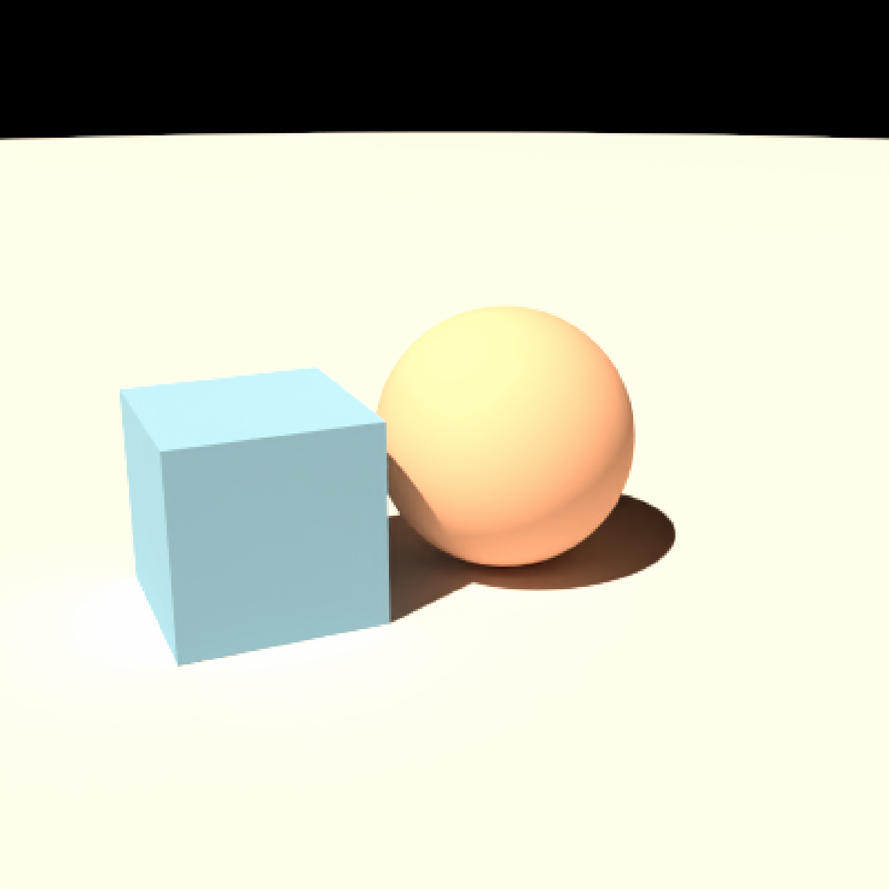
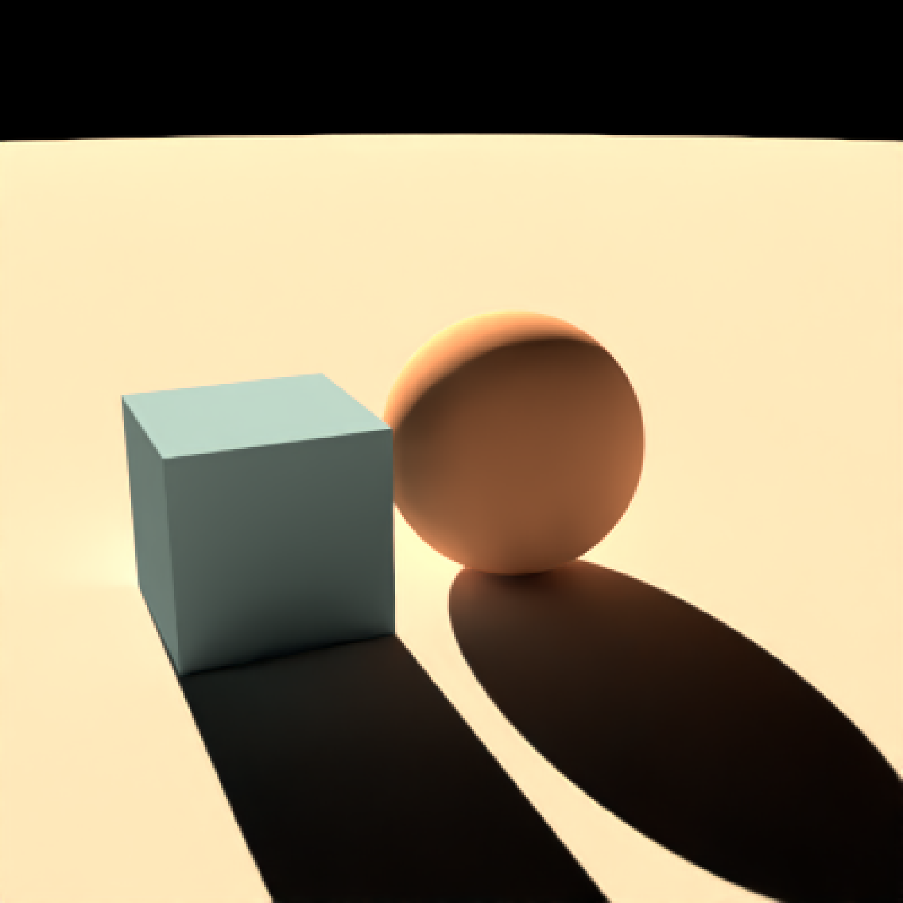

Create detailed celestial disks without embedding them in a latitude-longitude
environment map. skymodelr supplies the position and apparent angular size for
the observer, date, and time. The Sun uses Prague solar radiance queries; the
Moon uses skymodelr's surface texture, phase, earthshine, and radiometry routines.
Add these descriptions to a scene with add_infinite_light().
Latitude in degrees, between -90 and 90.
Longitude in degrees, between -180 and 180.
A single POSIXct date and time, with an explicit time zone.
Default list(). Named atmospheric settings for skymodelr's
Prague model: altitude, visibility, albedo, wide_spectrum,
number_cores, and the prague_rgb_correction options accepted by
skymodelr::calculate_sky_values(). hosek = FALSE is accepted;
hosek = TRUE is unsupported because these lights use per-direction queries.
Defaults match that function. Without a native atmospheric sky, altitude
describes one observer for the whole light. With sky_light(), a missing
altitude uses that sky's reference altitude
for ephemeris placement; atmospheric filtering uses each interaction's position.
Default 256. Target
disk image width and height in pixels, at least 16. The Moon's padded image is
cropped without downsampling; edge coverage can add a few pixels. Texture
detail is evaluated directly at this resolution, independently of the sky map.
Default 1. Nonnegative multiplier on physical radiance.
Default 0. Rotation in degrees around world Y, with the
same convention as infinite_light().
Default "sun" or "moon". Unique light name within the scene.
Default list(). Named options for skymodelr's Moon routines:
earthshine = TRUE, earthshine_albedo = 0.19,
solar_irradiance_w_m2 = 1300, and moon_extinction_kV = 0.172.
Native atmospheric scenes ignore moon_extinction_kV, using Prague
transmission instead.
A ray_infinite_light description.
Requires skymodelr and its Prague data. Install datasets with
skymodelr::download_sky_data() before rendering. Pkgdown builds download
missing datasets automatically. Requires the public
skymodelr::generate_sun_disk() and skymodelr::generate_moon_disk() exports.
Pair a Sun disk with sky_light_image(..., hosek = FALSE, render_mode = "atmosphere") to exclude the sky map's rasterized Sun. Leave
moon = FALSE in that sky when adding a Moon disk. Lights add radiance; they
do not eclipse or occlude each other, and adding a second copy doubles its light.
With sky_light(), explicit Sun and Moon lights replace the corresponding
automatic disks; there is no need to change sun, moon, or render_mode.
The clear-air sky
and haze retain that sky light's own location, time, rotation, and intensity.
Both lights use north at world +Z, east at world -X, and up at world +Y,
matching sky_light(). They have no parallax and add no scene geometry.
The geometric horizon clips their emission. Preparation generates and caches
linear EXRs before worker threads start; phase, time, and position stay fixed
during animation. Direct illumination samples each disk's solid angle, so a
small apparent diameter does not depend on a high-resolution sky sampler.
The Sun texture uses Prague's solar disk profile, mapped to the ephemeris angular diameter. Moon radiance preserves skymodelr's phase-dependent total irradiance and atmospheric extinction, with its spectral RGB and atmospheric tint. Earthshine is part of the generated phase texture. These are radiance images; exposure and tone mapping are applied only by the final render.
With a native atmospheric sky, preparation automatically requests
atmospheric_attenuation = FALSE through skymodelr's public disk generators.
Sun radiance and lunar phase, surface detail, and earthshine are generated
before atmospheric filtering. The renderer applies the Sun's spectrum or the
Moon's reference spectrum to Prague transmission along each light direction.
Spherical Earth visibility clips each direction, so a partially set disk can
illuminate high clouds while being hidden from the ground. Texture detail
remains independent of the sky sampling resolution. Skymodelr must support
the new argument. Without a native atmosphere, the existing fixed-observer
haze and geometric horizon clipping remain in effect.
The sky's haze = FALSE option removes finite scene haze while keeping
this celestial filtering. Its query_altitude option controls whether the
filtering and horizon follow each interaction or use the reference observer.
The precomputed clear-air haze is Sun-driven; lunar atmospheric in-scattering
and halos are not modeled. See sky_light() for the model's supported domain.
# Sun alone: direct illumination and shadows without a sky environment.
sun_time = as.POSIXct("2026-06-21 15:00:00", tz = "America/New_York")
sun_scene = generate_ground(depth = -1, material = diffuse("grey60")) |>
add_object(sphere(material = diffuse("coral"))) |>
add_object(cube(x = 2, y = -0.25, width = 1.5,
material = diffuse("steelblue"))) |>
add_infinite_light(sun_light(40.7, -74, sun_time))
render_scene(sun_scene, lookfrom = c(4, 3, -8), lookat = c(0.5, 0, 0),
aperture = 0, fov = 40, samples = 64,
integrator_type = "nee", ambient_light = FALSE, iso = 5)

# Moon alone: exposure is adjusted to reveal its much weaker illumination.
moon_time = as.POSIXct("2026-01-28 21:00:00", tz = "Pacific/Auckland")
moon_scene = generate_ground(depth = -1, material = diffuse("grey60")) |>
add_object(sphere(material = diffuse("coral"))) |>
add_object(cube(x = 2, y = -0.25, width = 1.5,
material = diffuse("steelblue"))) |>
add_infinite_light(moon_light(-36.87593, 174.7647, moon_time))
render_scene(moon_scene, lookfrom = c(4, 3, -8), lookat = c(0.5, 0, 0),
aperture = 0, fov = 40, samples = 64,
integrator_type = "nee", ambient_light = FALSE, auto_exposure = TRUE)
